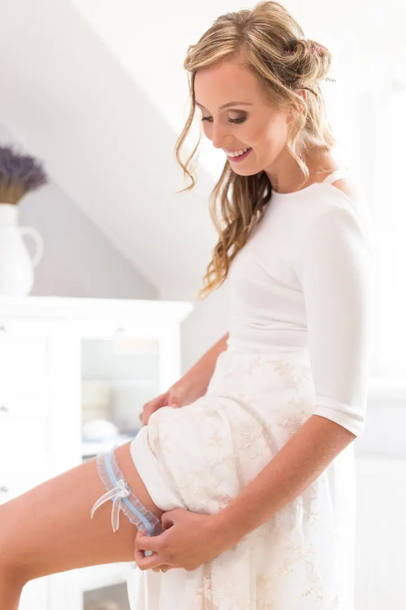
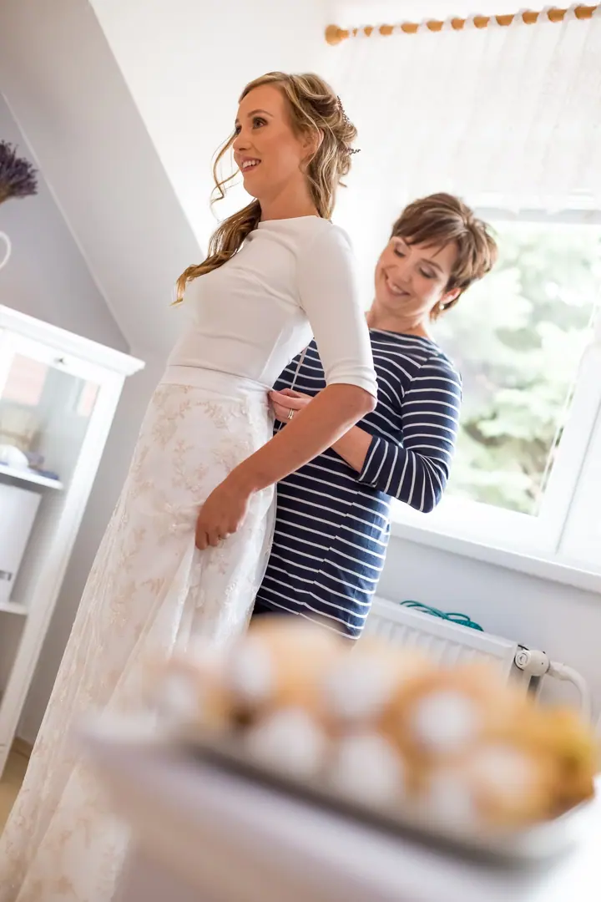
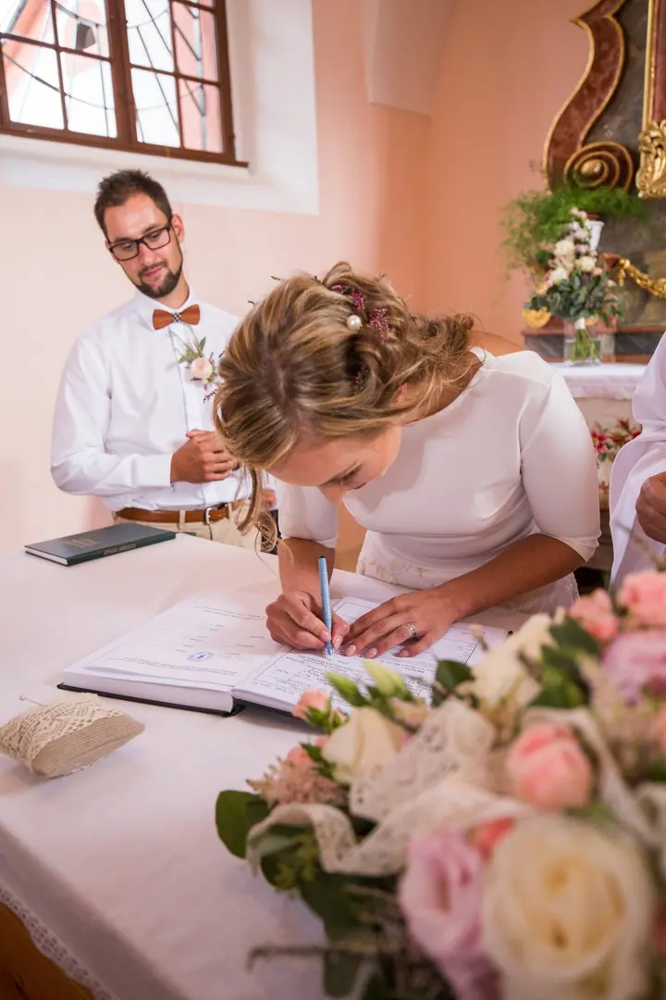
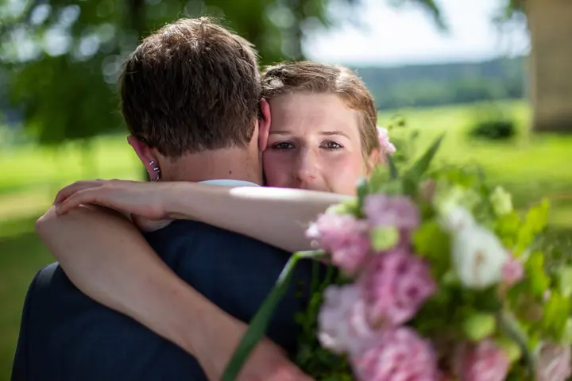
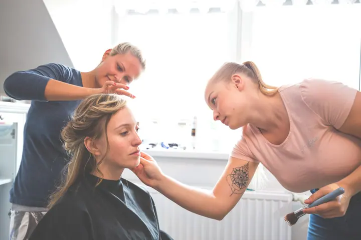
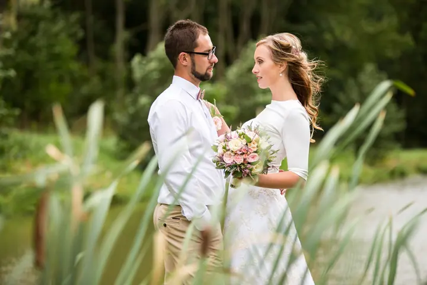

Svatební fotografie
Celý svatební den od příprav přes obřad až po společné chvíle ve dvou. Krásní lidé, pěkné místo a spousta lásky a emocí, to je to, co chci na fotkách mít.





Jmenuji se Jiří Kružík a jsem fotograf z Brna. Fotím svatby, portréty a krajinu. Nejraději mám dny, kdy se sejdou milí lidé, hezké místo a dobrá nálada.
Více o mně
„Svatební den patří k výjimečným a vrcholným zážitkům každého vztahu.“
— Jiří Kružík
Celý svatební den od příprav přes obřad až po společné chvíle ve dvou. Krásní lidé, pěkné místo a spousta lásky a emocí, to je to, co chci na fotkách mít.
Portréty v přirozeném světle, venku i v interiéru. Jde mi o pohled, úsměv a klidnou atmosféru.
Fotím krajinu, hlavně mlhu, ranní světlo a zlatou hodinku. Nejčastěji na jižní Moravě, ale také v horách.
Jsem fotograf z Brna se zaměřením na svatební, portrétní a krajinářskou fotografii. U svateb mě nejvíc baví sledovat celý den od začátku: ranní přípravy, nervozitu před obřadem, prstýnky, první polibek i chvíle, kdy už je všechno za vámi a můžete si den užívat.
Svatební den považuji za jeden z nejvýjimečnějších zážitků v každém vztahu. Je to den, po kterém už nebude jen já a ty, ale my. Proto si vždycky vážím toho, že u něj mohu být a zachytit ho tak, jak opravdu proběhl. Fotil jsem velké svatby v kostele i pohodovou venkovskou česko-americkou svatbu na jihu Čech.
Když zrovna nefotím lidi, vyrážím do krajiny. Hledám mlhu v lesích, ranní světlo nad poli na jižní Moravě a zlatou hodinku na Pálavě, ale fotil jsem třeba i v Dolomitech, ve Skotsku nebo pod Mont Blancem. Cit pro světlo z krajiny pak nosím i na svatby.
Napište mi přes formulář nebo zavolejte a pošlete datum, místo a pár slov o tom, jakou svatbu chystáte.
Probereme průběh dne, místa a to, na čem vám záleží nejvíc, ať se v den D všichni cítíme dobře.
Jsem s vámi od příprav přes obřad až po focení ve dvou. Fotím nenápadně a nechávám den plynout.
Fotky pečlivě vyberu a upravím, abyste se k celému dni mohli kdykoli vrátit.
Jsem z Brna a nejčastěji fotím na jižní Moravě. Za svatbou ale rád přijedu i jinam, fotil jsem například i v jižních Čechách.
Ano, rád. Líčení, oblékání šatů i ženicha, který si ladí košili. Právě z příprav bývají často nejvíc osobní fotky.
Kromě svateb fotím portréty a krajinu. Na portrétní focení se mi ozvěte, domluvíme se na místě a světle.
Stačí mi napsat nebo zavolat s datem svatby. Ověřím, jestli mám volno, a domluvíme se na dalších krocích.